PORTFOLIO
Check My Apps!!!
ABOUT
Who Am I?
PORTFOLIO
Check My Apps!!!
ABOUT
Who Am I?
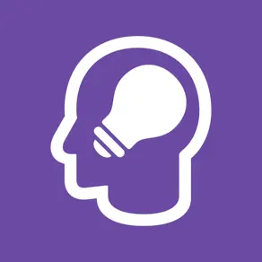
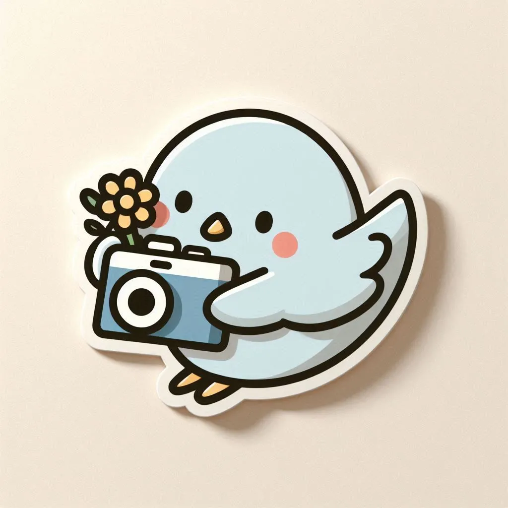
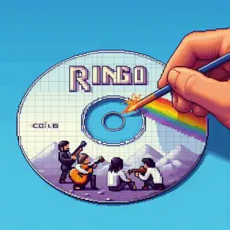
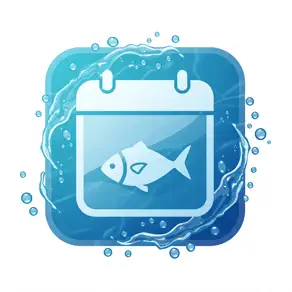
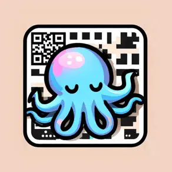
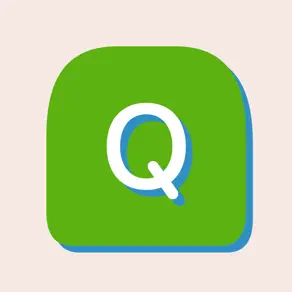
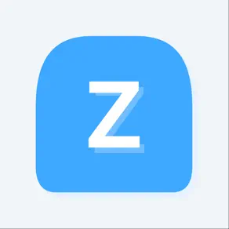
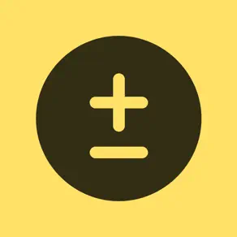
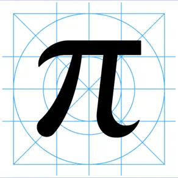
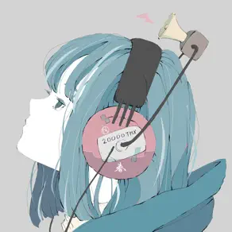
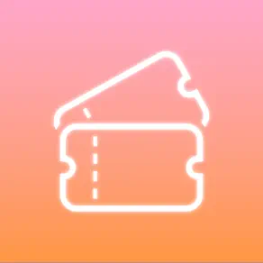
OUR MANIFESTO
續橋涼 — iOS Developer & Creator。
誰も作らないものを、まじめに作る。うんちの記録から、目薬をさす時間まで。Ryo Tsuzukihashi — iOS Developer & Creator.
I take the things nobody else will build and build them properly. From logging your poop to timing your eye drops.
「こんなの誰が使うの」と言われながら、毎日ひらかれているアプリたちPeople asked who would ever use them. They get opened every day.
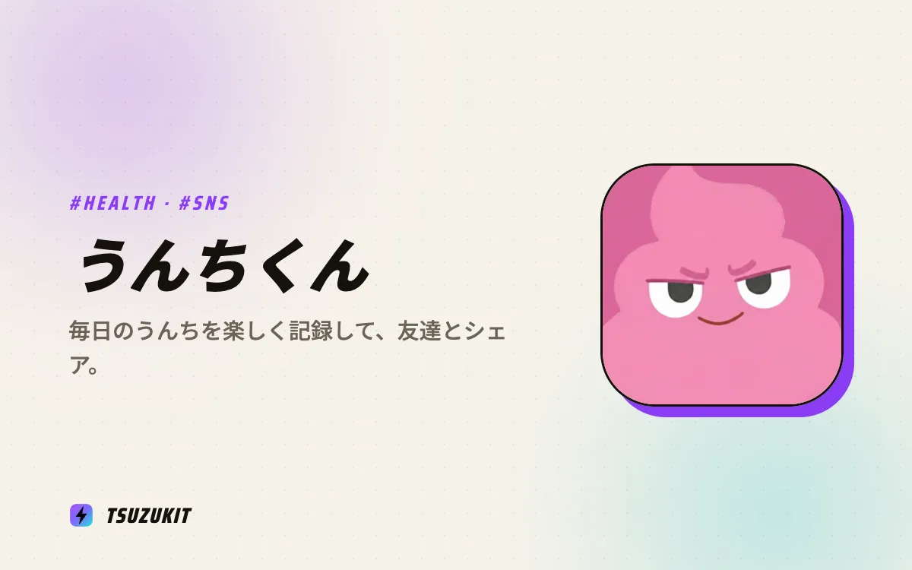
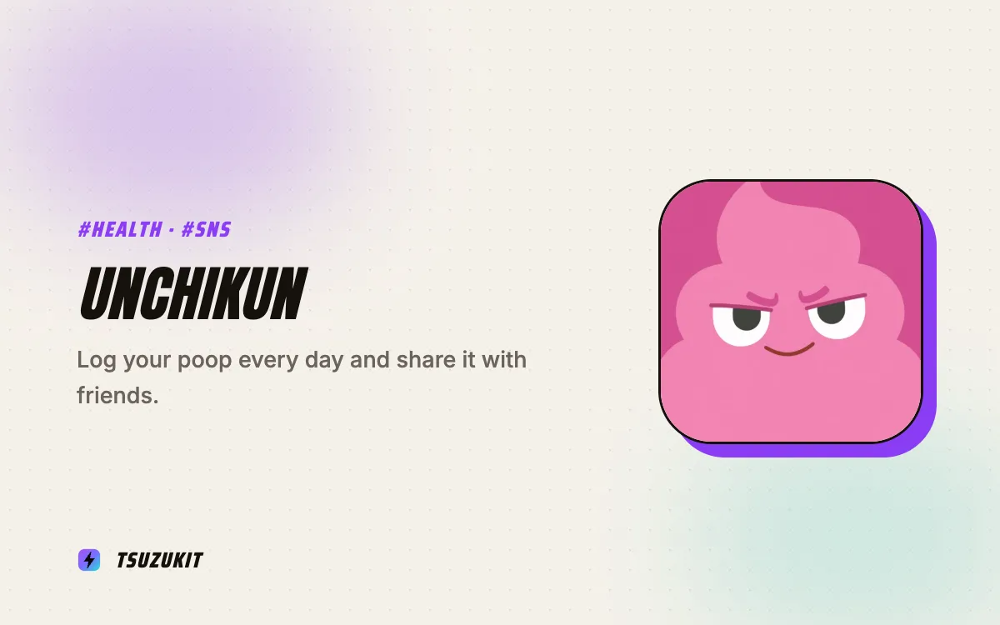
代表作Flagship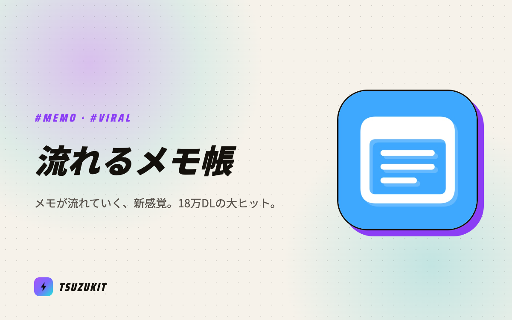
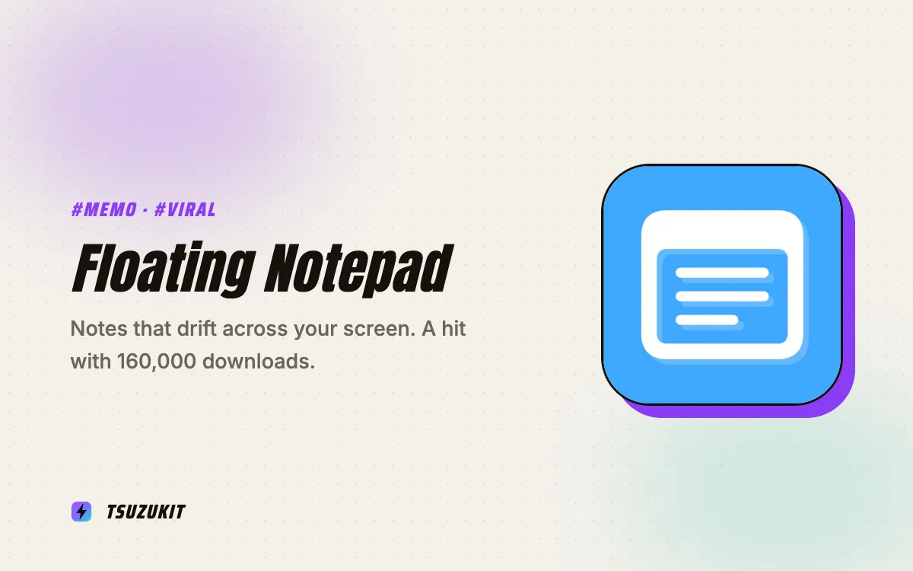
大ヒットBig hit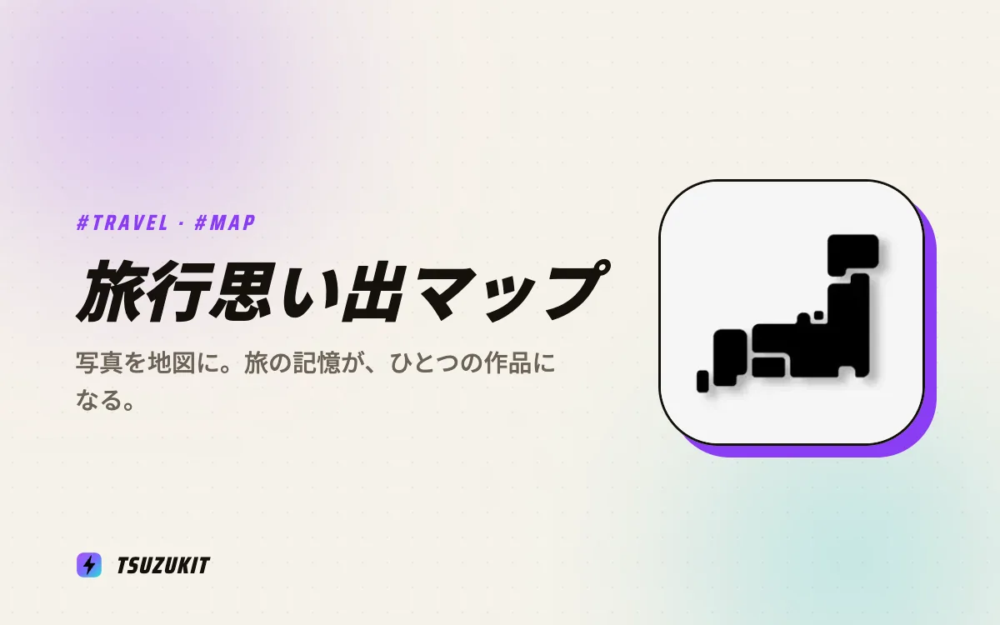
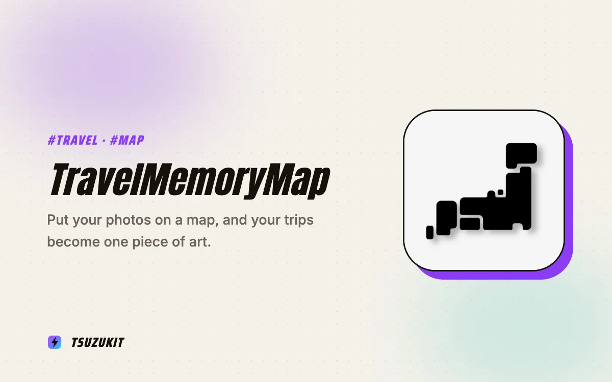
ロングセラーLong seller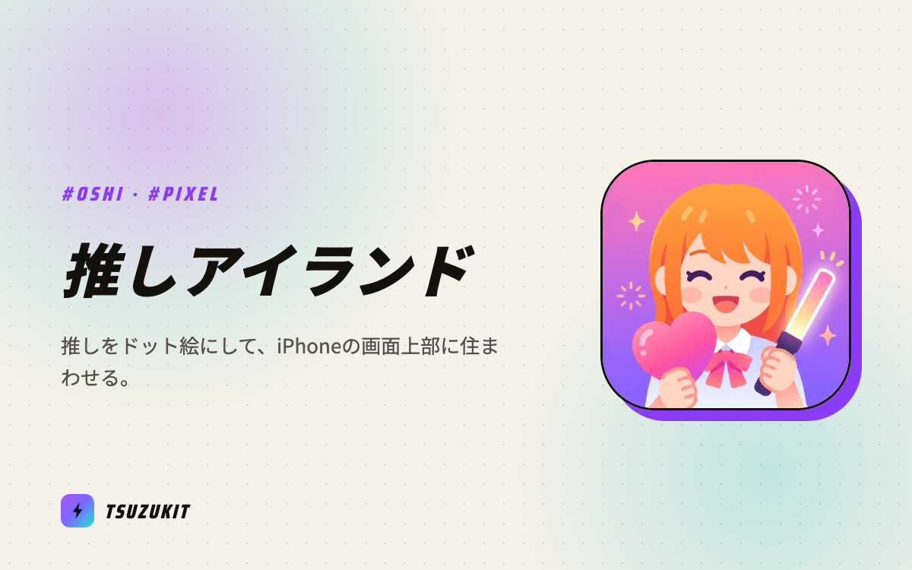
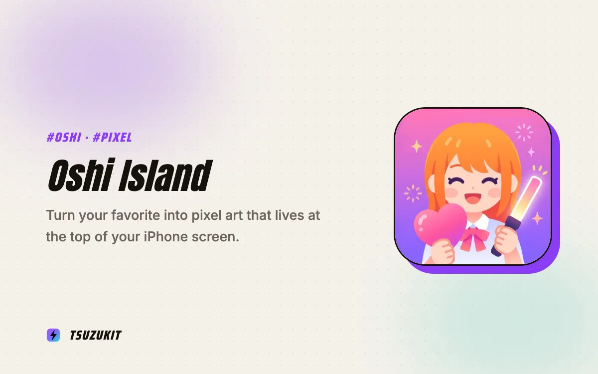
バズWent viral
会社で働きながら、個人開発をやめずにきた。
作ったものが知らない誰かの毎日に入っていくのが、面白いからです。I've kept making my own apps the whole time I've had a day job.
Watching something I made find its way into a stranger's everyday life never gets old.
「自分のアイデアを形にしたい」その一心で、大学生時代に最初のアプリを開発。I just wanted to turn my own ideas into something real. That alone got me to build my first app while I was at university.
広告の収益が21円だけ入った。誰も使わないと思っていたものを、知らない誰かが触っていた。Ads brought in exactly ¥21. Something I assumed nobody would use was being used by someone I'd never met.
旅の記憶を地図に描くアプリ。のちに15万ダウンロードを超える代表作になる。An app for drawing your travel memories on a map. It went on to pass 150,000 downloads and became one of my signature apps.
累計36万ダウンロード達成。神アプリグランプリ受賞。これからも挑戦は続く。Reached 360,000 total downloads and won the Kami App Grand Prix. And I'm not done yet.
リリース直後から急上昇し、累計20万ダウンロードを突破。代表作に。It shot up right after launch and passed 200,000 total downloads, becoming my signature app.
うんちを記録するアプリも、目薬をさす時間を知らせるアプリも、貝殻を判定する図鑑も、
どこかの誰かが「市場がない」と切り捨てたものです。その切り捨てられた側を拾って、手を抜かずに作る。An app for logging your poop, an app that tells you when to use your eye drops, a field guide that identifies seashells.
Each of them is something someone, somewhere wrote off with "there's no market for that." I pick up what got written off and build it without cutting corners.
“こんなの誰が使うの”が、
毎日使われている。“Who would ever use this?”
Turns out, people use it every day.
うんちくんは21万人が入れました。猫背リマインダーに3,640人、目薬リマインダーに623人。 数の大小ではなく、誰かの一日に居座れたかどうかで見ています。210,000 people have installed UNCHIKUN. 3,640 installed Posture Reminder, and 623 installed Eye Drop Reminder. I don't judge an app by how big the number is. I judge it by whether it earned a spot in someone's day.
屋号 TsuzuKit
京都店
〒600-8208
京都府京都市下京区小稲荷町85-2 Grand-K 京都駅前ビル 201Trade name: TsuzuKit
Kyoto office
〒600-8208
Grand-K Kyoto Ekimae Bldg. 201, 85-2 Koinaricho, Shimogyo-ku, Kyoto, Japan